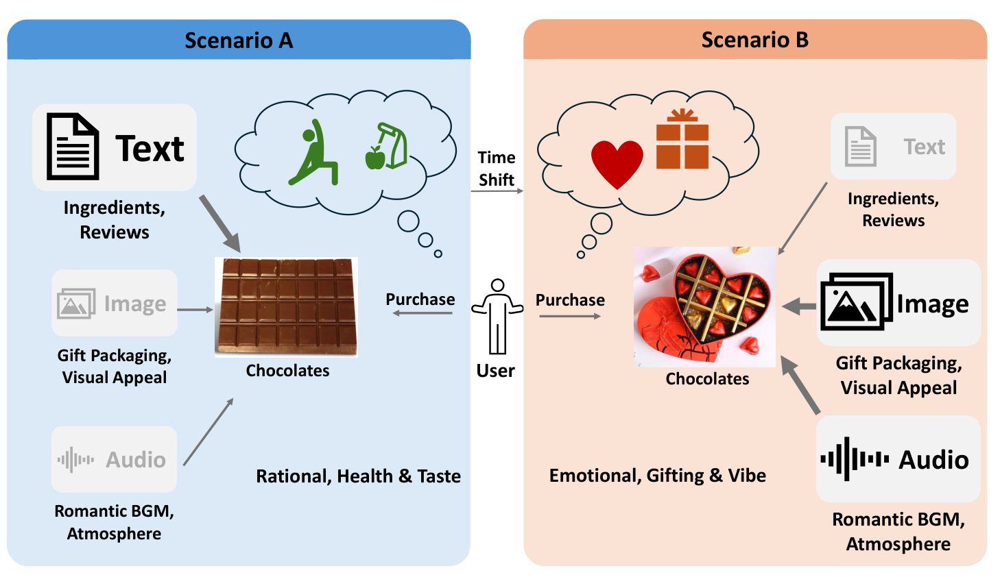
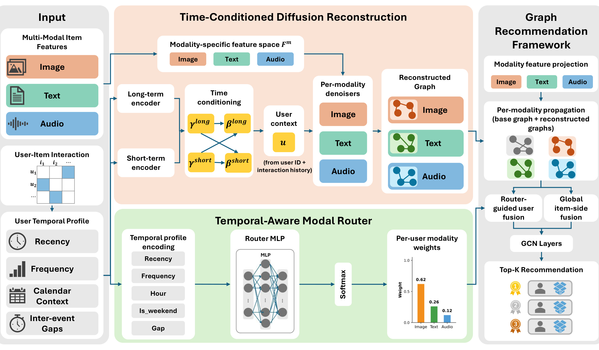
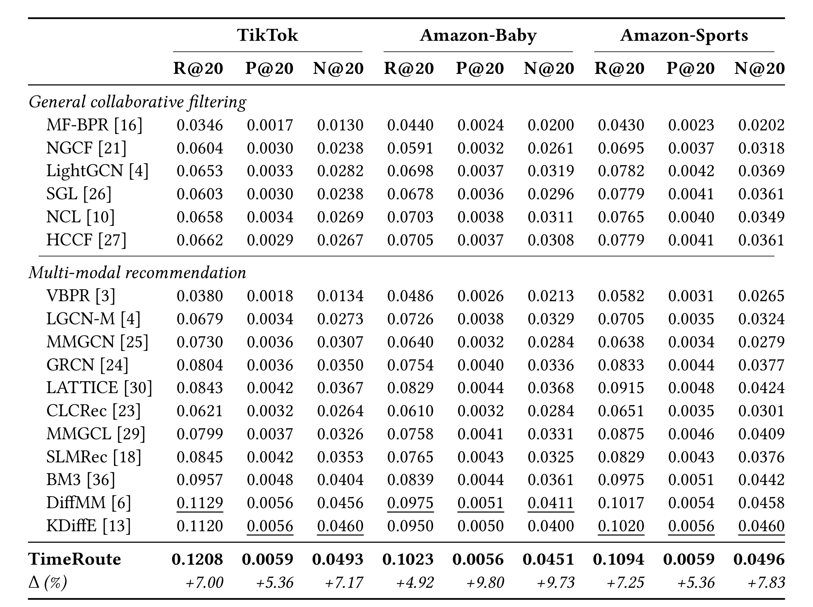
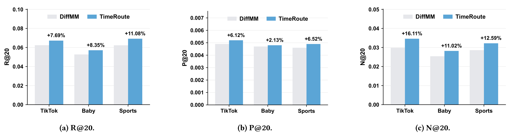
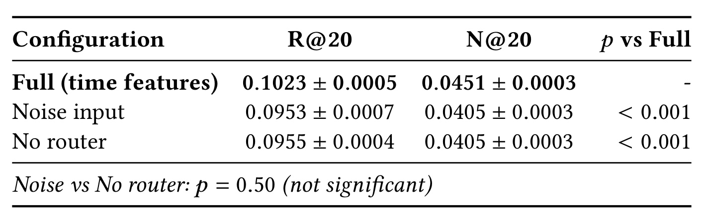
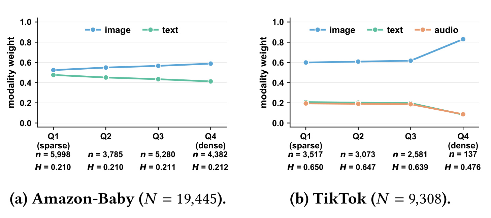
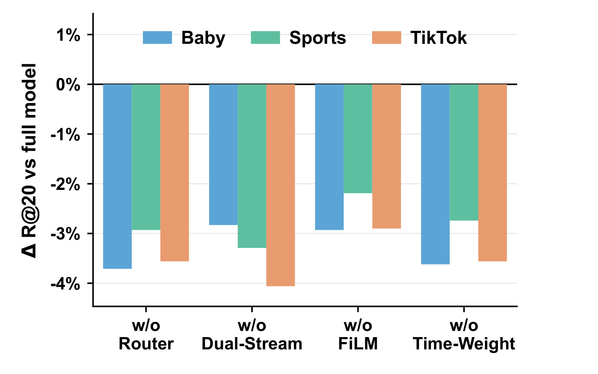
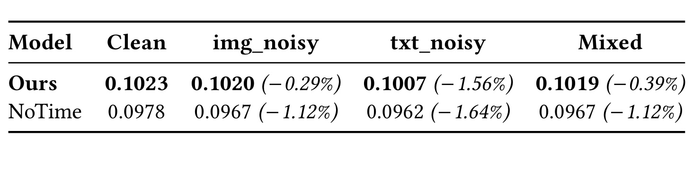

TimeRoute：面向多模态推荐的时间感知模态路由与扩散重建
TimeRoute 是一项面向隐式反馈 top-$K$ 多模态推荐的工作。作者为 Pengyu Zhang、Yangqin Jiang、Klim Zaporojets、Congfeng Cao 与 Paul Groth；第一作者主机构是阿姆斯特丹大学，合作机构包括香港大学与奥胡斯大学。当前可核验版本是 2026 年 8 月 11 日提交的 arXiv:2608.10983v1，代码位于已核验的匿名公开仓库。PDF 中仍保留 “2018”“Woodstock”“Conference acronym”、占位 DOI/ISBN 以及异常 Received 日期等 ACM 模板字段，这些都不是可信的正式出版信息；本文只按 arXiv v1 预印本解读。
不同模态的相关性会随时间变化，而且变化速度并不一致：同一用户在不同时间语境下需要不同的模态组合；当前较不相关的模态还可能把已经过时或具有误导性的边带入传播图。静态全局融合权重和不含时间条件的图重建无法同时处理这两类耦合问题。
1. 背景和问题
1.1 静态融合为何遗漏时间尺度错配
多模态推荐通常把用户—物品交互与图像、文本、音频等内容特征放在同一图学习框架中。协同信号稀疏时，内容模态能为从未被充分交互的物品提供额外相似性；在图神经网络中，模态特征还可以沿用户—物品边传播，补足一次点击或购买难以表达的偏好。VBPR、MMGCN、GRCN、LATTICE、BM3、DiffMM 等工作不断改进模态表示、图结构学习、自监督与扩散重建，却大多把融合比例视为数据集级参数：训练结束后，所有用户共享近似相同的图像/文本/音频混合方式。
TimeRoute 指出这里缺了一个独立维度——模态相关性的时间尺度。用户偏好和物品热度会漂移，但图像包装、文本成分、音频氛围并不以同样速度变化。论文用巧克力购买说明这种错配：日常采购更看重配料与评论，临近情人节时，礼盒外观和氛围音频突然变得更重要，节日过后这些信号又会衰减。于是“哪种模态可信”不是全局常数，也不只是用户 ID 的静态属性，而与用户最近活动、交互间隔、日历周期和历史跨度共同相关。

Figure 1 的 Scenario A 与 Scenario B 不是两个用户，而是同一用户的两个时间切片：左侧文本分支保持高权重，图像和音频被淡化；右侧则由礼盒视觉与浪漫氛围音频主导。图中的 “Time Shift” 因而不是简单地把旧兴趣替换成新兴趣，而是让各模态的相对可信度以不同速度重新排序。普通 time-aware recommender 可以给近期交互更大权重，却仍可能把所有内容模态当成一个共同漂移的向量；TimeRoute 要学习的是时间状态到模态比例的映射，并进一步阻止不再相关的模态边进入图传播。这个场景也揭示了评价难点：如果测试划分把训练和测试时段混在一起，静态融合可能借助整个时间范围内的信号掩盖问题，所以论文后来又补充按用户时间顺序的切分。
1.2 两个耦合问题：融合比例与过时图边
论文把 modality time-scale mismatch 拆为两个相互关联但作用位置不同的问题。第一个发生在表示融合层：同一用户处于不同时间状态时，需要不同的模态比例。若仍使用 DiffMM 式全局融合，节日购物与数月后的日常购买会得到相同混合权重，即使视觉、文本和音频证据的可靠性已经改变。TimeRoute 为此设计 temporal-aware modal router，根据每位用户聚合后的时间行为画像输出 softmax 模态分布，在 GCN 进一步传播之前完成用户侧个性化融合。
第二个问题发生在图结构层。某种模态曾经有效，不代表由它诱导的邻接边现在仍然有效；节日视觉边即使在节后失去解释力，也可能留在重建图中并经消息传递扩散。只在最终融合处降低该模态权重虽然能缓和影响，却已经太晚：噪声可能先进入模态专属传播，再污染用户和物品表示。因此论文在 diffusion-based graph reconstructor 内部注入同一个时间画像，让长、短期条件直接改变去噪结果，在每位用户的 top-$k$ 重建边生成前抑制过时连接。
这一区分是 TimeRoute 最有价值的建模判断。modal router 回答“当前该信哪种模态”，time-conditioned reconstructor 回答“当前该模态图里哪些边值得保留”。两者分别作用于融合和结构，却共享时间证据。它也比仅对交互做时间衰减更细：同一条近期交互可能在图像上仍可靠、在文本上已经陈旧，模型需要模态专属重建而不是统一时间权重。
同时要看到，论文中的 temporal profile 是由已有交互时间戳聚合出来的用户级快照，并不是逐事件 Transformer 或连续时间过程。它能以很小参数量接入图推荐，但可能把活跃度、季节性、流行度与真正兴趣变化混在一起；若画像只在离线批处理时更新，也无法即时吸收一次突发会话。后面的四分位实验能证明权重随活动特征系统变化，却不能完全证明模型识别了因果意义上的偏好漂移。
2. 方法
2.1 Graph Recommendation Framework 与两条时间路径
输入是二值隐式反馈矩阵 $\mathbf R$，$R_{u,v}=1$ 表示用户 $u$ 与物品 $v$ 有点击、购买或观看；物品还具有模态 $m$ 的原始特征。Amazon-Baby 和 Amazon-Sports 使用图像、文本，TikTok 还包含音频。各模态先投影到共同的 $d$ 维空间。用户上下文与两条图传播分支定义为：
符号解释：$\mathbf E_U/\mathbf E_V$ 是用户/物品 ID embedding，$\mathbf r_u$ 为用户交互向量，$\mathbf u$ 是后续 FiLM 调制的基底；$\mathbf e^{m,\mathrm{base}}$ 来自原始交互图上的两步 LightGCN 式传播，$\mathbf e^{m,\mathrm{rec}}$ 来自 diffusion 重建图上的一步传播，$\lambda_{\mathrm{adj}}$ 控制结构修正强度。模型没有让生成图取代真实图，而是保留可调残差，避免错误重建边直接支配排序。

Figure 2 左侧给出多模态物品、交互矩阵和用户时间画像。中部上方是 time-conditioned diffusion reconstruction：时间字段拆成长、短期编码器，分别产生 FiLM 参数调制用户上下文；每个模态拥有独立 denoiser，输出图像、文本、音频重建图。中部下方是 temporal-aware modal router：同一时间信息经另一种向量化和小型 MLP，得到逐用户模态权重。右侧先把原始图与重建图用于各模态传播，再执行用户侧路由融合与物品侧全局融合，最后经 GCN 与内积返回 top-$K$。关键不是简单并列两个模块，而是时间条件在“边进入传播之前”和“模态表示融合之时”各介入一次。 训练阶段重建图每个 epoch 更新；推理阶段使用训练好的 denoiser 生成图，再计算融合表示，不再更新参数。
2.2 Temporal-Aware Modal Router：profile、floor 与 diversity
作者从交互时间戳提取 12 个原始字段：长周期组含全局天数、用户活跃跨度、年份偏移、月份；短周期组含对数交互间隔、间隔分桶、归一化近期位置、星期、小时、是否周末；辅助字段是月内日期与 Unix 时间戳。越新的交互聚合权重越高；月份、日期、星期、小时先在正弦—余弦空间平均，避免 23:00 与 01:00 被平均成中午。router 使用 16 维 $\tilde{\mathbf t}_u$：四个周期字段展开为 8 维，四个连续字段为 4 维，$\mathrm{delta\_log}$ 与 $\mathrm{pos\_norm}$ 为 2 维，周末标记用 2 维 one-hot。
符号解释：两层 MLP 维度为 16→32→$|\mathcal M|$，第二层零初始化让 $\mathbf w_u$ 从均匀分布起步；floor 变换保持权重和为 1，并保证每个模态至少占 0.05。用户侧使用个性化 $w'_{u,m}$，物品侧因缺乏对称的用户历史画像而使用全局 $\boldsymbol\beta=\mathrm{Softmax}(\tilde{\boldsymbol\beta})$。论文报告 router 只增加 610 个参数（Amazon）或 643 个参数（TikTok）。
裸 softmax 有两种相反退化：把某一模态对所有人压到 0，或让所有用户都输出同一个近均匀向量。weight floor 解决前者，为误判保留最低保险与梯度，却允许 TikTok 三模态中的主模态理论上达到 0.90；它不保证语义均衡。后者由多样性损失处理：
符号解释：$H(\mathbf p)=-\sum_m p_m\log p_m$，$\mathcal B$ 是用户 minibatch。最小化第一项让单用户选择更明确；第二项带负号，促使 batch 平均分布保持高熵，避免所有用户集中到同一模态。该损失使用 floor 前的 $\mathbf w_u$ 保持直接梯度。floor 防止“模态被彻底关闭”，diversity 防止“所有用户做同一选择”，两者的塌缩对象不同。
2.3 FiLM 长短流 Diffusion Graph Reconstruction
每个模态 $m$ 有独立 denoiser。标准 DDPM 先把干净交互向量 $\mathbf x_0=\mathbf r_u$ 加噪；TimeRoute 再把 12 个时间字段按类型编码并分为慢变、快变集合。慢变集合描述全局位置、用户历史跨度、年份与月份，快变集合描述交互间隔及分桶、小时、星期、周末和近期位置：
符号解释：$\mathbf x_t$ 是第 $t$ 步噪声状态，$\bar\alpha_t$ 是累计噪声日程；$\phi$ 是字段级编码器，连续字段过线性层，周期字段转正弦—余弦，间隔另有分位数 bucket embedding。两个 MLP 不直接输出推荐分数，而是形成两套时间条件。
两套条件分别产生 FiLM 缩放与平移，denoiser 对长、短上下文各运行一次，再由用户级 gate 合并：
符号解释：$s\in\{\mathrm{long},\mathrm{short}\}$，$\odot$ 为逐维乘法，$\mathbf e_t$ 是 diffusion-step embedding。$\boldsymbol\gamma=1+\mathrm{ELU}(\cdot)$、$\boldsymbol\beta=\tanh(\cdot)$ 使早期调制接近恒等映射；$\alpha_u$ 决定用户更依赖慢变还是快变重建。长短流是同一模态 denoiser 的两次条件化调用，不是两个最终推荐塔。
denoiser 不直接把模态特征矩阵作为输入，因此作者用 alignment 把预测交互投影到模态空间，并用 time-reweighted diffusion loss 强调时间前沿：
符号解释：第一式让预测交互的模态特征汇总贴近真实交互的 ID embedding 汇总；第二式中的 $w_{\mathrm{snr}}(t)$ 是扩散步权重，$\mathrm{pos\_norm}_u\in[0,1]$ 表示用户最近交互接近时间前沿的程度，$\lambda_t$ 控制额外放大。训练好后，对每用户、每模态执行反向扩散，从 $\hat{\mathbf x}^m_0$ 选 top-$k$ 物品组装 $\widehat{\mathbf R}^m$。过时边由此在消息传播前被重新筛选，而非传播后才靠融合补救。
2.4 联合损失与逐 epoch 三阶段训练
符号解释：BPR 用正负物品对优化最终 embedding 内积，CL 继承 DiffMM 的多视图对比，随后是各模态 diffusion、alignment、router diversity 与 $L_2$ 正则。公式看似端到端相加，实际按阶段更新不同参数集合。
每个 epoch 的第一阶段只更新 denoiser 侧参数，包括字段编码器、FiLM heads、gate 和去噪 MLP，损失为 diffusion 加 alignment；第二阶段用刚更新的 denoiser 为全部用户、全部模态采样，并以 top-$k$ 组装重建图；第三阶段固定这些图，更新用户/物品 ID embedding、模态投影、物品侧全局权重和 router，使用 BPR、CL、diversity 与正则。CL 的视图由不经过 router 的模态传播构造，因此不会把近均匀对比偏好反向施加给 router。三阶段把“生成哪些边”与“如何用这些边排序”解耦，又通过每轮图更新让结构追随当前模型。
训练与推理的差别也很明确：训练循环反复更新 denoiser、离散图和排序参数；推理只用已训练参数重建/读取模态图，计算 router 融合与 GCN 表示，再以内积返回 top-$K$。论文未给出生产系统中的图重建频率、全量采样延迟、显存与存储成本，因此“每 epoch 全用户×全模态重建”是否可扩到线上规模仍未回答。
3. 实验结果
3.1 数据集、统计协议与整体有效性
实验覆盖 TikTok、Amazon-Baby、Amazon-Sports；三者具有不同时间跨度、时间戳覆盖和用户活跃分布，Amazon-Sports 的时间戳覆盖最低，正文消融讨论给出约 63%。指标固定为 Recall@20、Precision@20、NDCG@20。主设置沿用 Random split，补充设置按每位用户的时间顺序把较早交互用于训练、较晚交互用于验证和测试。比较对象既有 MF-BPR、NGCF、LightGCN、SGL、NCL、HCCF 等协同方法，也有 VBPR、MMGCN、GRCN、LATTICE、BM3、DiffMM、KDiffE 等多模态方法。
每项实验使用 10 个固定随机种子并报告均值/标准差，显著性采用 paired two-sided $t$-test，阈值 $p<0.05$。相对提升按下式计算：
符号解释：分母是同一数据集、同一指标列里的最强基线，所以各列基准可能不同；“最高 9.8%”是峰值，不是平均或所有设置统一增幅。

Table 1 显示 TimeRoute 在随机切分的九个数据集—指标组合上都取得最高值。TikTok 的 R@20 从 DiffMM 的 0.1129 到 0.1208，增幅 7.00%；N@20 从最强基线 KDiffE 的 0.0460 到 0.0493，增幅 7.17%。Amazon-Baby 的 R/P/N@20 为 0.1023、0.0056、0.0451，对应 4.92%、9.80%、9.73%；Amazon-Sports 为 0.1094、0.0059、0.0496，对应 7.25%、5.36%、7.83%。所以峰值 9.80% 特指 Baby 的 P@20，不能写成所有数据集统一提升 9.8%。表中证据都是离线 top-20，没有线上点击、转化或时延结果。
随机切分会让训练集接触完整时间范围，可能淡化过时信号。作者因此增加 per-user Chronological split，但因计算成本只重新比较最接近的 diffusion backbone DiffMM，没有复跑 Table 1 的完整 baseline 集合。

Figure 3 三个面板分别是 R@20、P@20、N@20，灰蓝柱比较 DiffMM 与 TimeRoute。九个组合全部提高，N@20 最明显：TikTok +16.11%、Amazon-Baby +11.02%、Amazon-Sports +12.59%；R@20 的三组提升为 +7.69%、+8.35%、+11.08%，P@20 为 +6.12%、+2.13%、+6.52%。时间切分下 NDCG 增益扩大，符合“时间条件在分布漂移时更重要”的预期，也说明改进不只来自随机划分的混合时间分布。不过正确结论是“相对 DiffMM 的时间泛化稳定”，不能扩展成“时间切分上击败全部强基线”；统计上也需要完整横向复跑才能支持后一说法。
3.2 时间信号必要性与用户级路由
为排除“多一个 MLP 就变好”，作者在 Amazon-Baby 上把 16 维时间输入替换为同维固定高斯噪声，噪声种子独立于训练种子，架构和参数量不变，再与完全移除 router 比较。

Table 2 中，完整时间输入的 R@20 为 $0.1023\pm0.0005$，N@20 为 $0.0451\pm0.0003$；噪声输入降到 $0.0953\pm0.0007$ 和 $0.0405\pm0.0003$，无 router 为 $0.0955\pm0.0004$ 和 $0.0405\pm0.0003$。完整模型相对两者均为 $p<0.001$；噪声与无 router 的 R@20 差异为 $p=0.50$，不显著。这个控制说明额外容量不足以复制增益，时间字段才是关键，但实验只在 Baby 上完成，其他数据集仍可能存在不同的容量—正则交互。
作者再按交互数把 Amazon-Baby 和 TikTok 用户分成 Q1 至 Q4 四分位，报告各组平均模态权重与路由熵，检验 router 是否真正形成用户差异。

Figure 4 中，Baby 的平均图像权重从 Q1 的 0.524 升到 Q4 的 0.588，相对增加 12.2%；TikTok 从 0.599 升到 0.830，文本和音频由约 0.20 降到 0.09 以下。TikTok 每用户图像权重的组内标准差从 0.363 降至 0.194，减少 47%，熵由 0.650 降至 0.476；论文还报告四分位差异 $p<10^{-6}$。这说明权重并非一个全局常数：稀疏用户保留分散模态依赖，活跃用户形成更确定的图像主导路由。值得注意的是，Baby 的熵约 0.21 且跨四分位几乎不变，说明“活跃度越高越确定”主要由 TikTok 驱动，不能无条件推广到所有数据。反面是 Q4 权重已接近单模态，0.05 floor 只阻止彻底关闭文本/音频；若图像发生域外故障，高置信 router 仍可能放大风险。
3.3 组件贡献与不均衡噪声
作者分别移除 modal router、dual-stream、FiLM、time-weighted loss，在三数据集随机切分上比较 R@20。router 属于融合级时间感知，后三者主要改变图重建。

Figure 5 以相对完整模型的百分比变化为纵轴；移除任一组件都会使三个数据集下降 2.19% 至 4.06%。Baby 去掉 router 下降 3.71%，是最大单项影响；TikTok 去 router 下降 3.56%，与 time-weight 接近。dual-stream 在 Sports 下降 3.29%，在 TikTok 下降 4.06%，是这两个数据集最大或并列最大的重建贡献；FiLM 的降幅较小但稳定，为 2.19% 至 2.93%。任一单项被移除后仍高于主表最强 R@20 基线，例如 Baby 0.0985 对 DiffMM 0.0975、Sports 0.1058 对 KDiffE 0.1020、TikTok 0.1159 对 DiffMM 0.1129。这支持组件互补，但缺少两两组合消融，模块交互仍未完全辨识。
最后，作者在 Amazon-Baby 模态特征中注入按原特征标准差缩放的高斯噪声，比较完整模型与关闭所有时间组件的 NoTime。条件包括 Clean、仅图像噪声 0.5、仅文本噪声 0.5、图像 0.5/文本 0.1 的 Mixed。

Table 3 中，完整模型在 Clean、img_noisy、txt_noisy、Mixed 上的 R@20 为 0.1023、0.1020、0.1007、0.1019；NoTime 为 0.0978、0.0967、0.0962、0.0967，绝对差距稳定在 0.0045 至 0.0053。仅图像受噪时，完整模型下降 0.29%，NoTime 下降 1.12%，差距扩大到 0.0053；仅文本受噪时二者下降接近，说明 router 不一定消除主导模态被直接破坏，但重建级机制仍保留总体优势；Mixed 差距为 0.0052。实验支持“不均衡模态质量下时间组件仍有效”，但高斯特征噪声只是过时边的代理，且只在 Baby 测试，不能等价于线上内容陈旧或语义错误。
整体证据链依次回答五个研究问题：总体效果与时间切分、时间输入是否必要、路由是否用户化、各组件是否独立贡献、模态质量不均时是否稳健。10-seed paired tests 比单次最优结果可靠。不过论文没有说明多数据集、多指标、多消融同时检验时是否做 multiple-comparison correction；$p$ 值也不能替代效应量、置信区间与系统成本。最稳妥的判断是“离线结果一致且机制对照较完整”，不是“已经证明线上时序推荐有效”。
4. 总结
4.1 我的判断与工程启发
TimeRoute 不是给多模态推荐简单增加 timestamp feature，而是把时间放在两个正确的决策点：先在 diffusion 生成邻接边前调整结构，再在模态表示进入最终 GCN 前调整融合。modal router 的 weight floor 与 diversity regularizer 解决两种不同塌缩，FiLM 长短流又把慢变季节性和快变活动间隔分开。主结果、时间切分、同容量噪声对照、用户四分位和组件消融相互衔接，方法动机与实验问题之间对应清楚。
工程上最可迁移的是“小 router + 结构级过滤”的分层路线。已有图像/文本塔不必立即替换主干，可以先用活动频率、近期性、星期/小时等稳定字段生成用户 gating，同时设置最低权重与跨用户多样性监控；若离线图更新成本允许，再把时间条件用于候选边重建或邻居采样。上线应额外记录路由熵、权重分位数、模态缺失率与漂移，并把图刷新成本纳入 A/B 设计；论文没有提供这些系统指标。
4.2 局限与风险
- 时间画像是聚合统计。 它压缩事件顺序，可能把高活跃度、季节性、流行度与真实兴趣转移混在一起，也难表达突发单次会话。
- 时间证据覆盖不均。 Amazon-Sports 只有约 63% 时间戳覆盖，缺失值如何影响不同用户群仍需审计。
- 随机切分仍是主表口径。 Chronological split 只与 DiffMM 比较，完整强基线没有重跑，时间泛化的横向范围有限。
- 模态塌缩只被软限制。 TikTok Q4 图像权重达 0.830；floor 保留梯度，却不能保证低质量主导模态不被过度依赖。
- 构图成本缺失。 每 epoch 为每用户、每模态采样并取 top-$k$，可能带来显著计算、显存和存储压力。
- 发布状态尚早。 当前仅是 arXiv v1；PDF 出版字段是占位符，匿名仓库的长期链接与最终版本一致性仍未知。
4.3 后续跟进
- 在严格 per-user chronological split 上重跑 LATTICE、BM3、KDiffE 等完整基线，并按时间戳覆盖率分桶报告效应。
- 把聚合 temporal profile 补充为会话级序列编码，对比轻量统计路由与在线事件状态路由的收益、延迟和稳定性。
- 加入显式 modality-quality estimator，把时间相关性与输入质量分开，测试缺失、陈旧、语义错误等非高斯故障。
- 报告训练耗时、每轮构图成本、top-$k$ 敏感性与线上刷新策略，评估低频刷新或增量边更新近似。
- 对 paired tests 做多重比较校正并提供置信区间、效应量；校准路由权重，检验低熵是否真的对应更高个体收益。
总体而言，TimeRoute 给出一条结构清楚的研究路线：时间不只是一项排序特征，也可以决定模态该占多少权重、哪些内容边应该进入传播图。 当前离线证据支持这一方向，但是否适合生产系统，取决于时间状态能否在线更新、图重建能否以可接受成本刷新，以及高置信路由面对真实模态故障时是否可靠。